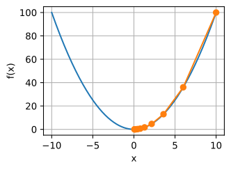
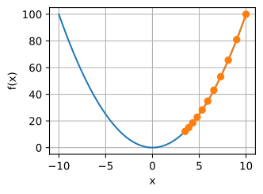
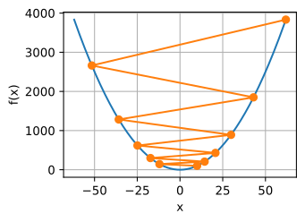
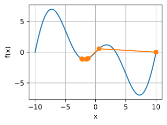
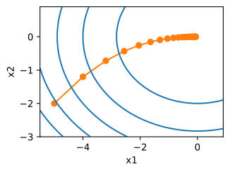
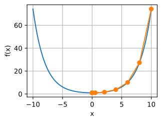
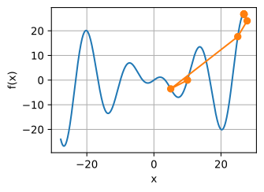
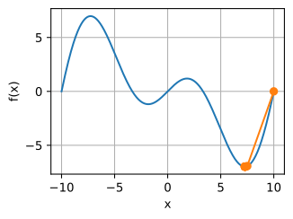

Gradient Descent¶
Trong phần này, chúng ta sẽ giới thiệu các khái niệm cơ bản làm nền tảng cho gradient descent. Mặc dù hiếm khi được dùng trực tiếp trong deep learning, việc hiểu gradient descent là chìa khóa để hiểu các thuật toán stochastic gradient descent. Chẳng hạn, bài toán tối ưu hóa có thể phân kỳ do tốc độ học quá lớn. Hiện tượng này đã có thể được quan sát trong gradient descent. Tương tự, tiền điều kiện hóa là một kỹ thuật phổ biến trong gradient descent và được chuyển tiếp sang các thuật toán nâng cao hơn. Hãy bắt đầu với một trường hợp đặc biệt đơn giản.
Gradient Descent Một Chiều¶
Gradient descent trong một chiều là một ví dụ tuyệt vời để giải thích tại sao thuật toán gradient descent có thể làm giảm giá trị của hàm mục tiêu. Xét một hàm thực khả vi liên tục \(f: \mathbb{R} \rightarrow \mathbb{R}\). Dùng khai triển Taylor, chúng ta thu được
Tức là, trong xấp xỉ bậc nhất, \(f(x+\epsilon)\) được cho bởi giá trị hàm \(f(x)\) và đạo hàm bậc nhất \(f'(x)\) tại \(x\). Không phải là vô lý khi giả định rằng với \(\epsilon\) nhỏ, di chuyển theo hướng âm của gradient sẽ làm giảm \(f\). Để đơn giản, chúng ta chọn một kích thước bước cố định \(\eta > 0\) và chọn \(\epsilon = -\eta f'(x)\). Thay điều này vào khai triển Taylor ở trên, chúng ta nhận được
Nếu đạo hàm \(f'(x) \neq 0\) không triệt tiêu, chúng ta có tiến triển vì \(\eta f'^2(x)>0\). Hơn nữa, chúng ta luôn có thể chọn \(\eta\) đủ nhỏ để các hạng bậc cao trở nên không đáng kể. Do đó, chúng ta đi đến
Điều này có nghĩa là, nếu chúng ta dùng
để lặp \(x\), giá trị của hàm \(f(x)\) có thể giảm. Vì vậy, trong gradient descent, trước hết chúng ta chọn một giá trị khởi tạo \(x\) và một hằng số \(\eta > 0\), rồi dùng chúng để liên tục lặp \(x\) cho đến khi đạt điều kiện dừng, ví dụ khi độ lớn của gradient \(|f'(x)|\) đủ nhỏ hoặc số vòng lặp đã đạt một giá trị nhất định.
Để đơn giản, chúng ta chọn hàm mục tiêu \(f(x)=x^2\) để minh họa cách cài đặt gradient descent. Mặc dù chúng ta biết rằng \(x=0\) là nghiệm tối thiểu hóa \(f(x)\), chúng ta vẫn dùng hàm đơn giản này để quan sát cách \(x\) thay đổi.


#@tab tensorflow
%matplotlib inline
from d2l import tensorflow as d2l
import numpy as np
import tensorflow as tf

#@tab all
def f(x): # Objective function
return x ** 2
def f_grad(x): # Gradient (derivative) of the objective function
return 2 * x

Tiếp theo, chúng ta dùng \(x=10\) làm giá trị khởi tạo và giả sử \(\eta=0.2\). Dùng gradient descent để lặp \(x\) 10 lần, chúng ta có thể thấy rằng cuối cùng giá trị của \(x\) tiến gần đến nghiệm tối ưu.
#@tab all
def gd(eta, f_grad):
x = 10.0
results = [x]
for i in range(10):
x -= eta * f_grad(x)
results.append(float(x))
print(f'epoch 10, x: {x:f}')
return results
results = gd(0.2, f_grad)

Quá trình tối ưu hóa theo \(x\) có thể được vẽ như sau.
#@tab all
def show_trace(results, f):
n = max(abs(min(results)), abs(max(results)))
f_line = d2l.arange(-n, n, 0.01)
d2l.set_figsize()
d2l.plot([f_line, results], [[f(x) for x in f_line], [
f(x) for x in results]], 'x', 'f(x)', fmts=['-', '-o'])
show_trace(results, f)

Tốc Độ Học¶
Tốc độ học \(\eta\) có thể do người thiết kế thuật toán đặt. Nếu chúng ta dùng tốc độ học quá nhỏ, nó sẽ khiến \(x\) cập nhật rất chậm, đòi hỏi nhiều vòng lặp hơn để có nghiệm tốt hơn. Để minh họa điều gì xảy ra trong trường hợp như vậy, hãy xét quá trình trong cùng bài toán tối ưu hóa với \(\eta = 0.05\). Như chúng ta có thể thấy, ngay cả sau 10 bước, chúng ta vẫn còn rất xa nghiệm tối ưu.

Ngược lại, nếu chúng ta dùng tốc độ học quá cao, \(\left|\eta f'(x)\right|\) có thể quá lớn đối với công thức khai triển Taylor bậc nhất. Tức là, hạng \(\mathcal{O}(\eta^2 f'^2(x))\) trong :eqref:gd-taylor-2 có thể trở nên đáng kể. Trong trường hợp này, chúng ta không thể đảm bảo rằng phép lặp của \(x\) sẽ có thể hạ thấp giá trị của \(f(x)\). Ví dụ, khi đặt tốc độ học là \(\eta=1.1\), \(x\) vượt quá nghiệm tối ưu \(x=0\) và dần phân kỳ.

Cực Tiểu Cục Bộ¶
Để minh họa điều gì xảy ra với các hàm không lồi, hãy xét trường hợp \(f(x) = x \cdot \cos(cx)\) với một hằng số \(c\) nào đó. Hàm này có vô số cực tiểu cục bộ. Tùy thuộc vào lựa chọn tốc độ học và mức độ điều kiện tốt của bài toán, chúng ta có thể kết thúc ở một trong nhiều nghiệm. Ví dụ dưới đây minh họa cách một tốc độ học cao (không thực tế) sẽ dẫn đến một cực tiểu cục bộ kém.
#@tab all
c = d2l.tensor(0.15 * np.pi)
def f(x): # Objective function
return x * d2l.cos(c * x)
def f_grad(x): # Gradient of the objective function
return d2l.cos(c * x) - c * x * d2l.sin(c * x)
show_trace(gd(2, f_grad), f)
Gradient Descent Đa Biến¶
Bây giờ khi đã có trực giác tốt hơn về trường hợp một biến, hãy xét tình huống trong đó \(\mathbf{x} = [x_1, x_2, \ldots, x_d]^\top\). Tức là, hàm mục tiêu \(f: \mathbb{R}^d \to \mathbb{R}\) ánh xạ vector thành vô hướng. Tương ứng, gradient của nó cũng là đa biến. Đó là một vector gồm \(d\) đạo hàm riêng:
Mỗi phần tử đạo hàm riêng \(\partial f(\mathbf{x})/\partial x_i\) trong gradient cho biết tốc độ thay đổi của \(f\) tại \(\mathbf{x}\) theo đầu vào \(x_i\). Như trong trường hợp một biến trước đó, chúng ta có thể dùng xấp xỉ Taylor tương ứng cho các hàm đa biến để có ý tưởng về điều cần làm. Cụ thể, chúng ta có
Nói cách khác, nếu bỏ qua các hạng bậc hai theo \(\boldsymbol{\epsilon}\), hướng giảm dốc nhất được cho bởi gradient âm \(-\nabla f(\mathbf{x})\). Việc chọn một tốc độ học phù hợp \(\eta > 0\) cho ta thuật toán gradient descent nguyên mẫu:
Để xem thuật toán hoạt động ra sao trong thực tế, hãy xây dựng một hàm mục tiêu \(f(\mathbf{x})=x_1^2+2x_2^2\) với vector hai chiều \(\mathbf{x} = [x_1, x_2]^\top\) làm đầu vào và một vô hướng làm đầu ra. Gradient được cho bởi \(\nabla f(\mathbf{x}) = [2x_1, 4x_2]^\top\). Chúng ta sẽ quan sát quỹ đạo của \(\mathbf{x}\) bằng gradient descent từ vị trí ban đầu \([-5, -2]\).
Đầu tiên, chúng ta cần thêm hai hàm trợ giúp. Hàm thứ nhất dùng một hàm cập nhật và áp dụng nó 20 lần cho giá trị khởi tạo. Hàm trợ giúp thứ hai trực quan hóa quỹ đạo của \(\mathbf{x}\).
#@tab all
def train_2d(trainer, steps=20, f_grad=None):
"""Optimize a 2D objective function with a customized trainer."""
# `s1` and `s2` are internal state variables that will be used in Momentum, adagrad, RMSProp
x1, x2, s1, s2 = -5, -2, 0, 0
results = [(x1, x2)]
for i in range(steps):
if f_grad:
x1, x2, s1, s2 = trainer(x1, x2, s1, s2, f_grad)
else:
x1, x2, s1, s2 = trainer(x1, x2, s1, s2)
results.append((x1, x2))
print(f'epoch {i + 1}, x1: {float(x1):f}, x2: {float(x2):f}')
return results
#@tab mxnet
def show_trace_2d(f, results):
"""Show the trace of 2D variables during optimization."""
d2l.set_figsize()
d2l.plt.plot(*zip(*results), '-o', color='#ff7f0e')
x1, x2 = d2l.meshgrid(d2l.arange(-55, 1, 1),
d2l.arange(-30, 1, 1))
x1, x2 = x1.asnumpy()*0.1, x2.asnumpy()*0.1
d2l.plt.contour(x1, x2, f(x1, x2), colors='#1f77b4')
d2l.plt.xlabel('x1')
d2l.plt.ylabel('x2')
#@tab tensorflow
def show_trace_2d(f, results):
"""Show the trace of 2D variables during optimization."""
d2l.set_figsize()
d2l.plt.plot(*zip(*results), '-o', color='#ff7f0e')
x1, x2 = d2l.meshgrid(d2l.arange(-5.5, 1.0, 0.1),
d2l.arange(-3.0, 1.0, 0.1))
d2l.plt.contour(x1, x2, f(x1, x2), colors='#1f77b4')
d2l.plt.xlabel('x1')
d2l.plt.ylabel('x2')
#@tab pytorch
def show_trace_2d(f, results):
"""Show the trace of 2D variables during optimization."""
d2l.set_figsize()
d2l.plt.plot(*zip(*results), '-o', color='#ff7f0e')
x1, x2 = d2l.meshgrid(d2l.arange(-5.5, 1.0, 0.1),
d2l.arange(-3.0, 1.0, 0.1), indexing='ij')
d2l.plt.contour(x1, x2, f(x1, x2), colors='#1f77b4')
d2l.plt.xlabel('x1')
d2l.plt.ylabel('x2')
Tiếp theo, chúng ta quan sát quỹ đạo của biến tối ưu hóa \(\mathbf{x}\) với tốc độ học \(\eta = 0.1\). Chúng ta có thể thấy rằng sau 20 bước, giá trị của \(\mathbf{x}\) tiến gần đến cực tiểu tại \([0, 0]\). Quá trình diễn ra khá ổn định, dù tương đối chậm.
#@tab all
def f_2d(x1, x2): # Objective function
return x1 ** 2 + 2 * x2 ** 2
def f_2d_grad(x1, x2): # Gradient of the objective function
return (2 * x1, 4 * x2)
def gd_2d(x1, x2, s1, s2, f_grad):
g1, g2 = f_grad(x1, x2)
return (x1 - eta * g1, x2 - eta * g2, 0, 0)
eta = 0.1
show_trace_2d(f_2d, train_2d(gd_2d, f_grad=f_2d_grad))
Các Phương Pháp Thích Nghi¶
Như chúng ta đã thấy trong subsec_gd-learningrate, việc chọn tốc độ học \(\eta\) "vừa đúng" là khó. Nếu chọn quá nhỏ, chúng ta tiến triển rất ít. Nếu chọn quá lớn, nghiệm dao động và trong trường hợp xấu nhất thậm chí có thể phân kỳ. Nếu chúng ta có thể tự động xác định \(\eta\) hoặc loại bỏ hoàn toàn việc phải chọn tốc độ học thì sao? Các phương pháp bậc hai không chỉ xét giá trị và gradient của hàm mục tiêu mà còn xét cả độ cong của nó có thể giúp ích trong trường hợp này. Mặc dù những phương pháp này không thể được áp dụng trực tiếp cho deep learning do chi phí tính toán, chúng cung cấp trực giác hữu ích về cách thiết kế các thuật toán tối ưu hóa nâng cao mô phỏng nhiều tính chất mong muốn của các thuật toán được phác thảo bên dưới.
Phương Pháp Newton¶
Khi xem lại khai triển Taylor của một hàm \(f: \mathbb{R}^d \rightarrow \mathbb{R}\), không cần phải dừng lại sau hạng đầu tiên. Trên thực tế, chúng ta có thể viết nó là
Để tránh ký hiệu rườm rà, chúng ta định nghĩa \(\mathbf{H} \stackrel{\textrm{def}}{=} \nabla^2 f(\mathbf{x})\) là Hessian của \(f\), một ma trận \(d \times d\). Với \(d\) nhỏ và các bài toán đơn giản, \(\mathbf{H}\) dễ tính. Mặt khác, với các mạng nơ-ron sâu, \(\mathbf{H}\) có thể lớn đến mức không khả thi, do chi phí lưu trữ \(\mathcal{O}(d^2)\) phần tử. Hơn nữa, nó có thể quá đắt để tính qua lan truyền ngược. Tạm thời hãy bỏ qua những cân nhắc như vậy và xem chúng ta sẽ thu được thuật toán nào.
Sau cùng, cực tiểu của \(f\) thỏa mãn \(\nabla f = 0\).
Theo các quy tắc giải tích trong subsec_calculus-grad,
bằng cách lấy đạo hàm của :eqref:gd-hot-taylor theo \(\boldsymbol{\epsilon}\) và bỏ qua các hạng bậc cao, chúng ta đi đến
Tức là, chúng ta cần đảo Hessian \(\mathbf{H}\) như một phần của bài toán tối ưu hóa.
Lấy một ví dụ đơn giản, với \(f(x) = \frac{1}{2} x^2\), chúng ta có \(\nabla f(x) = x\) và \(\mathbf{H} = 1\). Do đó với bất kỳ \(x\) nào, chúng ta thu được \(\epsilon = -x\). Nói cách khác, chỉ một bước là đủ để hội tụ hoàn hảo mà không cần bất kỳ điều chỉnh nào! Tiếc là ở đây chúng ta đã hơi may mắn: khai triển Taylor là chính xác vì \(f(x+\epsilon)= \frac{1}{2} x^2 + \epsilon x + \frac{1}{2} \epsilon^2\).
Hãy xem điều gì xảy ra trong các bài toán khác. Cho một hàm cosh lồi \(f(x) = \cosh(cx)\) với một hằng số \(c\) nào đó, chúng ta có thể thấy rằng cực tiểu toàn cục tại \(x=0\) đạt được sau vài vòng lặp.
#@tab all
c = d2l.tensor(0.5)
def f(x): # Objective function
return d2l.cosh(c * x)
def f_grad(x): # Gradient of the objective function
return c * d2l.sinh(c * x)
def f_hess(x): # Hessian of the objective function
return c**2 * d2l.cosh(c * x)
def newton(eta=1):
x = 10.0
results = [x]
for i in range(10):
x -= eta * f_grad(x) / f_hess(x)
results.append(float(x))
print('epoch 10, x:', x)
return results
show_trace(newton(), f)
Bây giờ hãy xét một hàm không lồi, chẳng hạn \(f(x) = x \cos(c x)\) với một hằng số \(c\) nào đó. Sau cùng, lưu ý rằng trong phương pháp Newton, chúng ta rốt cuộc chia cho Hessian. Điều này có nghĩa là nếu đạo hàm bậc hai là âm, chúng ta có thể đi theo hướng làm tăng giá trị của \(f\). Đó là một khiếm khuyết nghiêm trọng của thuật toán. Hãy xem điều gì xảy ra trong thực tế.
#@tab all
c = d2l.tensor(0.15 * np.pi)
def f(x): # Objective function
return x * d2l.cos(c * x)
def f_grad(x): # Gradient of the objective function
return d2l.cos(c * x) - c * x * d2l.sin(c * x)
def f_hess(x): # Hessian of the objective function
return - 2 * c * d2l.sin(c * x) - x * c**2 * d2l.cos(c * x)
show_trace(newton(), f)
Điều này đã sai một cách ngoạn mục. Chúng ta có thể sửa nó như thế nào? Một cách là "sửa" Hessian bằng cách lấy giá trị tuyệt đối của nó. Một chiến lược khác là đưa tốc độ học trở lại. Điều này có vẻ làm mất mục đích ban đầu, nhưng không hẳn. Có thông tin bậc hai cho phép chúng ta thận trọng mỗi khi độ cong lớn và đi các bước dài hơn khi hàm mục tiêu phẳng hơn. Hãy xem cách điều này hoạt động với tốc độ học nhỏ hơn một chút, chẳng hạn \(\eta = 0.5\). Như chúng ta có thể thấy, chúng ta có một thuật toán khá hiệu quả.
Phân Tích Hội Tụ¶
Chúng ta chỉ phân tích tốc độ hội tụ của phương pháp Newton cho một hàm mục tiêu lồi và khả vi ba lần \(f\), trong đó đạo hàm bậc hai khác không, tức là \(f'' > 0\). Chứng minh đa biến là phần mở rộng trực tiếp của lập luận một chiều bên dưới và được lược bỏ vì nó không giúp chúng ta nhiều về mặt trực giác.
Ký hiệu \(x^{(k)}\) là giá trị của \(x\) tại vòng lặp thứ \(k^\textrm{th}\) và đặt \(e^{(k)} \stackrel{\textrm{def}}{=} x^{(k)} - x^*\) là khoảng cách đến nghiệm tối ưu tại vòng lặp thứ \(k^\textrm{th}\). Bằng khai triển Taylor, chúng ta có rằng điều kiện \(f'(x^*) = 0\) có thể được viết là
điều này đúng với một \(\xi^{(k)} \in [x^{(k)} - e^{(k)}, x^{(k)}]\) nào đó. Chia khai triển trên cho \(f''(x^{(k)})\) cho ta
Nhớ rằng chúng ta có cập nhật \(x^{(k+1)} = x^{(k)} - f'(x^{(k)}) / f''(x^{(k)})\). Thay phương trình cập nhật này vào và lấy giá trị tuyệt đối của hai vế, chúng ta có
Do đó, bất cứ khi nào chúng ta ở trong một vùng có \(\left|f'''(\xi^{(k)})\right| / (2f''(x^{(k)})) \leq c\) bị chặn, chúng ta có sai số giảm theo bình phương
Nhân tiện, các nhà nghiên cứu tối ưu hóa gọi đây là hội tụ tuyến tính, trong khi một điều kiện như \(\left|e^{(k+1)}\right| \leq \alpha \left|e^{(k)}\right|\) sẽ được gọi là tốc độ hội tụ hằng số. Lưu ý rằng phân tích này đi kèm một số lưu ý. Thứ nhất, chúng ta không thực sự có nhiều đảm bảo về thời điểm sẽ đạt đến vùng hội tụ nhanh. Thay vào đó, chúng ta chỉ biết rằng một khi đạt đến vùng đó, hội tụ sẽ rất nhanh. Thứ hai, phân tích này đòi hỏi \(f\) có hành vi tốt đến các đạo hàm bậc cao. Điều này quy về việc đảm bảo rằng \(f\) không có bất kỳ tính chất "bất ngờ" nào về cách các giá trị của nó có thể thay đổi.
Tiền Điều Kiện Hóa¶
Không có gì đáng ngạc nhiên khi việc tính và lưu trữ Hessian đầy đủ là rất tốn kém. Do đó, việc tìm các phương án thay thế là điều mong muốn. Một cách để cải thiện tình hình là tiền điều kiện hóa. Nó tránh tính toàn bộ Hessian mà chỉ tính các phần tử đường chéo. Điều này dẫn đến các thuật toán cập nhật có dạng
Mặc dù điều này không tốt bằng phương pháp Newton đầy đủ, nó vẫn tốt hơn nhiều so với việc không dùng. Để thấy tại sao đây có thể là một ý tưởng hay, hãy xét một tình huống trong đó một biến biểu thị chiều cao theo milimét và biến kia biểu thị chiều cao theo kilômét. Giả sử thang đo tự nhiên của cả hai đều là mét, chúng ta có sự không khớp rất tệ trong tham số hóa. May mắn là dùng tiền điều kiện hóa sẽ loại bỏ điều này. Về thực chất, tiền điều kiện hóa với gradient descent tương đương với việc chọn một tốc độ học khác nhau cho mỗi biến (tọa độ của vector \(\mathbf{x}\)). Như chúng ta sẽ thấy sau, tiền điều kiện hóa thúc đẩy một phần đổi mới trong các thuật toán tối ưu hóa stochastic gradient descent.
Gradient Descent với Tìm Kiếm Theo Đường¶
Một trong những vấn đề chính trong gradient descent là chúng ta có thể vượt quá mục tiêu hoặc tiến triển không đủ. Một cách khắc phục đơn giản cho vấn đề này là dùng tìm kiếm theo đường kết hợp với gradient descent. Tức là, chúng ta dùng hướng được cho bởi \(\nabla f(\mathbf{x})\), rồi thực hiện tìm kiếm nhị phân để tìm tốc độ học \(\eta\) nào tối thiểu hóa \(f(\mathbf{x} - \eta \nabla f(\mathbf{x}))\).
Thuật toán này hội tụ nhanh (để phân tích và chứng minh, xem ví dụ Boyd.Vandenberghe.2004). Tuy nhiên, với mục đích của deep learning, điều này không thật sự khả thi, vì mỗi bước của tìm kiếm theo đường sẽ yêu cầu chúng ta đánh giá hàm mục tiêu trên toàn bộ tập dữ liệu. Chi phí này quá lớn để thực hiện.
Tóm Tắt¶
- Tốc độ học rất quan trọng. Quá lớn thì chúng ta phân kỳ, quá nhỏ thì không tiến triển.
- Gradient descent có thể bị mắc kẹt trong các cực tiểu cục bộ.
- Trong số chiều cao, việc điều chỉnh tốc độ học là phức tạp.
- Tiền điều kiện hóa có thể giúp điều chỉnh thang đo.
- Phương pháp Newton nhanh hơn nhiều một khi nó bắt đầu hoạt động đúng trong các bài toán lồi.
- Cẩn thận khi dùng phương pháp Newton mà không có bất kỳ điều chỉnh nào cho các bài toán không lồi.
Bài Tập¶
- Thử nghiệm với các tốc độ học và hàm mục tiêu khác nhau cho gradient descent.
- Cài đặt tìm kiếm theo đường để tối thiểu hóa một hàm lồi trong khoảng \([a, b]\).
- Bạn có cần đạo hàm cho tìm kiếm nhị phân, tức là để quyết định chọn \([a, (a+b)/2]\) hay \([(a+b)/2, b]\) không?
- Tốc độ hội tụ của thuật toán nhanh đến mức nào?
- Cài đặt thuật toán và áp dụng nó để tối thiểu hóa \(\log (\exp(x) + \exp(-2x -3))\).
- Thiết kế một hàm mục tiêu được định nghĩa trên \(\mathbb{R}^2\) trong đó gradient descent cực kỳ chậm. Gợi ý: đặt thang đo các tọa độ khác nhau.
- Cài đặt phiên bản nhẹ của phương pháp Newton bằng tiền điều kiện hóa:
- Dùng Hessian đường chéo làm bộ tiền điều kiện hóa.
- Dùng giá trị tuyệt đối của nó thay vì các giá trị thực tế (có thể có dấu).
- Áp dụng điều này cho bài toán ở trên.
- Áp dụng thuật toán trên cho một số hàm mục tiêu (lồi hoặc không). Điều gì xảy ra nếu bạn xoay tọa độ \(45\) độ?